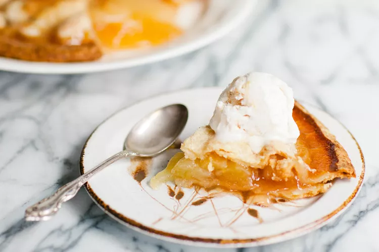

Apple Pie

Description
This pie recipe has won several first place prizes in local competitions. It can be served hot or cold at family dinners or during the holidays, topped with whipped cream or ice cream, or alongside a slice of cheddar cheese.
Ingredients
- Apples
- Butter and Flour
- Sugars
- Pie Crust
Steps
- Make the filling: On the stove, make a paste with flour and butter. Add the sugar and water and bring to a boil. Simmer, then remove from heat.
- Assemble the pie: Press one crust into a pie plate. Place the sliced apples on the bottom crust. Use the top crust to make a lattice crust according to the recipe below. Pour the butter-sugar mixture over the lattice crust.
- Bake the pie: Bake the pie in a preheated oven until the apples are soft and the crust is golden brown.
Return To Main Page